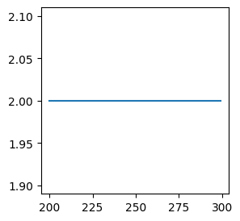
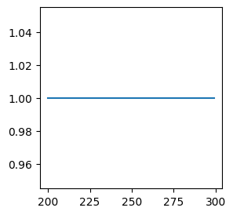

from torch.nn.functional import conv2d
import torch
import numpy as npConvolutions
Note: torch.nn.Conv2d is a Module that initializes all parameters i.e. kernel will be learned. Only functional form can take kernel as input.
Conv2d
We explore functional form of conv2d. Let’s make some inputs and kernels:
torch.manual_seed(14)
x = torch.randn(16, 3, 16, 16)
kernel = torch.randn(10, 3, 3, 3)basic Conv2 does what we expect:
y = conv2d(x, kernel)
print(x.shape)
print(y.shape)torch.Size([16, 3, 16, 16])
torch.Size([16, 10, 14, 14])Formula for output size for Convolutions is: \([(W−K+2P)/S]+1)\), where [] is the np.floor:
def get_output_size(w,k,p,s):
return int(((w-k+2*p)/s)+1)In above example:
get_output_size(16, 3, 0, 1)14if we want the same size, we could pass padding='same':
y = conv2d(x, kernel, padding='same')
print(x.shape)
print(y.shape)torch.Size([16, 3, 16, 16])
torch.Size([16, 10, 16, 16])This works ok for stride=1, but for stride >1 ‘same’ doesn’t make sense anymore in PyTorch (raises RuntimeError: padding='same' is not supported for strided convolutions). In TensorFlow however ‘same’ assumes one needs \(width/stride\) size, which in our case should be 8, instead we get expected 7:
y = conv2d(x, kernel, stride=2)
print(x.shape)
print(y.shape)torch.Size([16, 3, 16, 16])
torch.Size([16, 10, 7, 7])formula checks out:
get_output_size(16, 3, 0, 2)7So what’s the padding that we need? We need to do some math:
o = output size w = width p = padding s = stride if we solve the equation for p: o = int((w-k+2p)/s) + 1 o - 1 = int((w-k+2p)/s) and here we have a range: o - 1 = int((w-k+2p_min)/s) o - 1 = int((w-k+2p_max)/s) solving this: (o - 1) * s = min = w-k+2p_min <= w-k+2p <= w-k+2p_max = max < o s Note that inequality is not symmetric, the top bound is exclusive. Then: p_min = ((o-1)s - w + k) / 2 p_max = (os - w + k) / 2 which can both be decimal. at this point we can just get the ceil of p_min and be happy: \(p = np.ceil(((o-1)*s - w + k) / 2)\)
def get_lowest_padding(w,k,s):
o = np.ceil(w/s)
p = (np.ceil((k - (w - (o-1)*s)) / 2)).astype(int)
return pget_lowest_padding(90,15,10)3It is quite annoying that padding depends on the width of the input image (this is not always the case though), here is a re-write of the formula where width is defaulted:
def get_padding(kernel_size, stride, width=256):
"""
Padding that ensures the output_size of ceil(input_size/stride). Assuming square images:
"""
output_width = np.ceil(width / stride)
padding = int(np.ceil(((output_width-1) * stride - width + kernel_size) / 2))
return paddingPadding visualizations
Let’s plot padding for many image widths:
import nbimporter
from Python.functools import partial, plot_functionpartial_get_padding = partial(get_lowest_padding, k=5, s=2)
x = np.arange(200, 300, 1)
plot_function(partial_get_padding, x)
np.unique(partial_get_padding(np.arange(200,300,1)))array([2])partial_get_padding = partial(get_lowest_padding, k=3, s=1)
x = np.arange(200, 300, 1)
plot_function(partial_get_padding, x)
So this is funny, seems to be independent of the width. Let’s look into math again:
o = can be even or odd p = (np.ceil((k - (1 or 2)) / 2)) # generaly speaking p = (np.ceil((k - (1 to s) / 2)) p = (np.ceil((5 - (1 or 2)) / 2)) p = (np.ceil((4 or 3)/ 2)) p = 2
so that’s the reason.
We can also look into limits of p:
o = np.ceil(w/s) p = (np.ceil(((o-1)*s - w + k) / 2)) note that p is maximized when (o-1)*s - w is highest, i.e. w - (o-1)*s is lowest, which is has lowest value of 1 (by definition of o it can’t be 0): np.ceil((k-s)/2) <= p <= np.ceil((k-1)/2)
print(get_lowest_padding(90,16,10)) # np.ceil((k-s)/2) = (ceil((16-10)/2) = 3
print(get_lowest_padding(91,16,10)) # np.ceil((k-1)/2) = ceil(15/2) = 83
8Finally, for a special, but common case, w = s*o:
general equations: o = np.ceil(w/s) p = (np.ceil(((o-1)*s - w + k) / 2))
then: p = (np.ceil((k-s) / 2))
so padding doesn’t depend on the width in this case. We will stick with this formula since it makes it simple not to worry about the width, so long our images are divisible by s.
Conv2dTranspose
nn.ConvTranspose2d is used to upsample the input (for example in UNet). These have additional output_padding that fills only one-side (useful for those ‘same’ paddings). It is a non-symmetric padding of the output image that enables us to get an even size image.